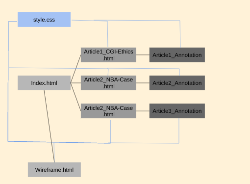

Explanation:
- My team's creative thinking process was that we wanted to first design our website as a sketch so that our entire team was on the same page before we decided to put it into pratice, otherwise we would all be doing different types of HTML and CSS which bothers everyone.
- Our team distributed the work by each person getting full control over one article and those that are more inept with CSS would help with CSS wherever needed.
- Our team feels the most proud of our content because we feel like we put all necessary information needed properly and in an organized manner.
- What our team found the most difficult was adding a professional sense of color because we wanted the site to feel vibrant but not so much that it feels unprofessional.
Back